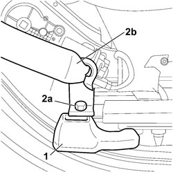
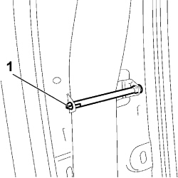
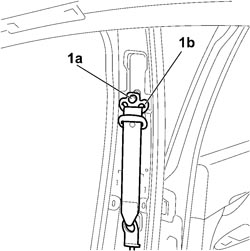

7065A10 FRONT SEAT BELT (ONE) LEFT OR RIGHT - R.R.
- Path
- Procedures > 70 FITTINGS > 7065 SAFETY BELTS AND ACCESSORIES > 7065A FRONT SAFETY BELTS > 7065A10 FRONT SEAT BELT (ONE) LEFT OR RIGHT - R.R.
- Kind
- repair procedure (removal / refitting; the operation number is the code)
- Applies to
- all engines; all production periods
- Interactive page
- https://sloeber94.github.io/elrnDB-fCrm/en/#/194001187
Applies to: all engines; all production periods
 Removing
Removing
 Refitting
Refitting- Turn the ignition key to the OFF position.
- Disconnect the negative and positive battery terminals.
Description | Connector | |
|---|---|---|
BATTERY |
Op. 7040L44 REAR DOOR RUNNING BOARD (ONE), LEFT OR RIGHT - R.R.
Op. 7040H36 CENTRE PILLAR LOWER ELEMENT (ONE), LEFT OR RIGHT - R.R
Op. 7040H38 CENTRE PILLAR UPPER ELEMENT (ONE), LEFT OR RIGHT - R.R
Op. 7045A49 OUTER GUARD OF FRONT SEAT ONE WITH ELECTRICAL MOVEMENT LH OR RH R R
1. Prise up the guard anchoring the front belt to the seat.
2. Undo the fixing bolt (2a) and remove the seat belt (2b).

Applies to: all engines; all production periods
1. Press the notched end and remove the belt retaining pin.

Applies to: all engines; all production periods
1. Unscrew bolt (1a) securing the front seat belt return ring (1b) to the pillar.

Applies to: all engines; all production periods
1. Undo the nut securing the reel.
2. Remove the seat belt (2a) complete with reel, releasing retainer (2b) from the seat.
Applies to: all engines; all production periods
Refitting
RemovingPosition the reel, ensuring that the retainer fits into the seat on the body.
Tighten the fixing bolt to the recommended torque.
Component | Fastening | dia | Value (daNm) | Validity |
|---|---|---|---|---|
BELT IDLER SUPPORT TO LEFT/RIGHT REEL MOUNTING BRACKET | Bolt | M8 | 1,8 ÷ 2,2 |
Position the seat belt mechanism and tighten the bolt to the specified torque.
Component | Fastening | dia | Value (daNm) | Validity |
|---|---|---|---|---|
FRONT SEAT BELT IDLER RING TO BODYSHELL | Bolt | 7/16” | 3,6 ÷ 4,4 |
Fit the belt retaining pin and secure the anchorages.
Op. 7040H38 CENTRE PILLAR UPPER ELEMENT (ONE), LEFT OR RIGHT - R.R
Tighten the seat belt terminal bolt to the seat and fit the protection.
Component | Fastening | dia | Value (daNm) | Validity |
|---|---|---|---|---|
BRACKET ON FRONT SEATS | Bolt | M10 | 3,6 ÷ 4,4 |
Op. 7045A49 OUTER GUARD OF FRONT SEAT ONE WITH ELECTRICAL MOVEMENT LH OR RH R R
Op. 7040H38 CENTRE PILLAR UPPER ELEMENT (ONE), LEFT OR RIGHT - R.R
Op. 7040H36 CENTRE PILLAR LOWER ELEMENT (ONE), LEFT OR RIGHT - R.R
Op. 7040L44 REAR DOOR RUNNING BOARD (ONE), LEFT OR RIGHT - R.R.
- Reconnect the negative and positive battery terminals.
Description | Connector | |
|---|---|---|
BATTERY |
Topics linked from this page (5)
- 7040H36 CENTRE PILLAR LOWER ELEMENT (ONE), LEFT OR RIGHT - R.R
- 7040H38 CENTRE PILLAR UPPER ELEMENT (ONE), LEFT OR RIGHT - R.R
- 7040L44 REAR DOOR RUNNING BOARD (ONE), LEFT OR RIGHT - R.R.
- 7045A49 OUTER GUARD OF FRONT SEAT ONE WITH ELECTRICAL MOVEMENT LH OR RH R R
- A001 BATTERY